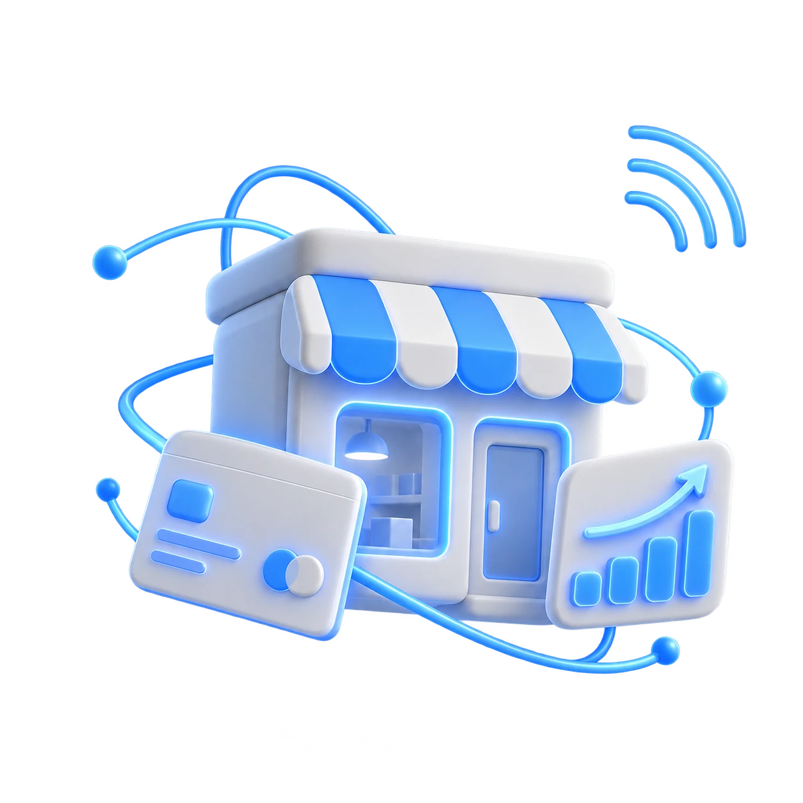

01 · Малый и средний бизнес
Автоматизация процессов, интеграции и доработка действующих IT-систем. Разбираемся в текущем состоянии проекта и помогаем довести решение до рабочего запуска.
Доработаем ваш проект
Разберёмся в коде, исправим ошибки, добавим функцииКлиент самостоятельно создаёт заявки, отслеживает их статусы и получает документы. История обработки, уведомления и работа с контрагентами — в одном кабинете.
Собственная CRM для управления продажами, клиентами и работой менеджеров. Сделки, контакты, задачи, аналитика и автоматизация — в одной системе, которую можно дорабатывать под процессы компании.
Интернет-магазин товаров для дома: каталог, карточки товаров, корзина и оформление заказов. Продуманы кабинет покупателя и отдельный интерфейс владельца для управления магазином. Прототип интерфейса (дизайн-концепт), не действующий магазин.
Сервис для расчёта стоимости металлоконструкций, подготовки смет и коммерческих предложений. Справочники материалов и работ, типовые конструкции, контроль маржинальности с согласованием и история версий — в одной системе.
Понравилось, что начали не с обещаний, а с вопросов. Стало понятно, что нужно исправить и с чего лучше начать.
Сложную интеграцию разбили на понятные части. Мы видели ход работы и могли проверять результат по этапам.
Не предлагали переписывать всё заново. Сначала посмотрели, что уже работает, затем определили объём доработок.
До старта согласовали объём и сроки. На каждом этапе было понятно, что готово и какой результат мы принимаем.